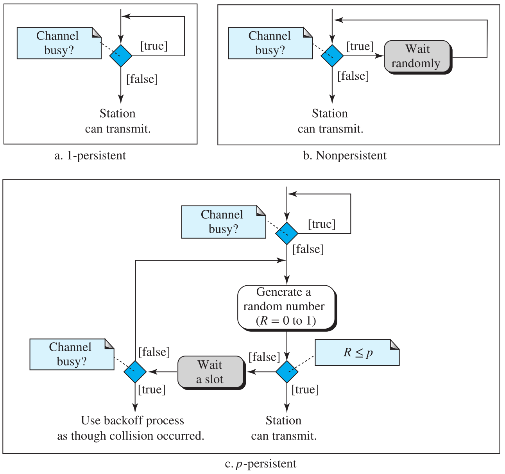

3 The MAC Sublayer
在 TCP/IP 协议族中，数据链路层通常分为两个子层：数据链路控制（DLC）子层和介质访问控制（MAC）子层。DLC 子层的内容（Framing，Error Detection/Correction）已经在上一章提及，接下来是 MAC 子层。
MAC 子层专门处理多点（或广播）链路的访问协调问题，确保多个节点在共享信道上发送数据时能够有序进行，从而解决信道分配问题。
用来确定广播信道（多路访问信道/随机访问信道）的下一个使用者的协议，叫做多重访问协议。根据资源分配机制和冲突处理方式，多重访问协议通常可分为以下三类：
-
信道划分协议 (Channel Partitioning Protocols)。
预先分配带宽，将共享信道划分为多个较小的、互不干扰的逻辑子信道，并将每个子信道永久分配给一个节点。例如 TDMA，FDMA，CDMA
-
随机访问协议 (Random Access Protocols)。
节点没有预定的传输时间或控制权限。任何站点只要有数据，就可以尝试以全部的信道速率 \(R\) 发送。但是可能出现冲突，因此协议必须定义冲突检测和解决机制。例如 ALOHA，CSMA
-
受控访问协议 (Controlled Access Protocols)
这类协议通过预定的机制，确保在任何时刻只有一个工作站能够成功传输，从而消除竞争和冲突。例如 Reservation，Polling，Token Passing
The Channel Allocation Problem
Static Channel Allocation
在任何一个 broadcasting network 里，关键的问题就是有多方需要使用信道的时候，确定哪一个该用它。一个传统的做法，就是把一个信道的所有容量拆分给多个用户使用，这就是静态信道分配（Static Channel Allocation）。
TDMA，FDMA 都是典型的静态信道分配方案。它们在 电路交换（Circuit Switching）中占有重要地位。
但是，传统的静态信道分配会有以下问题：
-
应对突发流量表现差：现代计算机网络中数据流量往往表现出极端的突发性， 峰值流量与平均流量之比极高。在这种情况下，静态信道分配表现不佳：
-
闲置时段的资源浪费：用户处于没有数据要发送的静止期（quiescent） 时，预分配的带宽资源闲置和浪费
- 在采用电路交换的网络中，即使在静默期间，专用的电路也会处于闲置状态，无法被其他正在进行的连接使用
- FDMA中，如果可用频谱被划分为 \(N\) 个区域，但实际通信的用户少于 \(N\) 个，则很大一部分宝贵的频谱资源会被浪费
- 如果想要通信的用户数量超过了信道划分的数量，即使一些被分配的用户是空闲的，仍会有用户因缺乏带宽而被拒绝通信
-
传输速率的限制：在用户突发活动期间，即使只有他一个用户有数据需要发送，该节点的最大吞吐量仍被限制为平均速率 \(R/N\)，而无法使用信道的全部速率 \(R\)。从而增加延迟。
-
-
延迟放大效应：将一个总容量为 \(C\) 的单一信道静态地划分为 \(N\) 个独立的子信道（每个容量为 \(C/N\)），在总负载和总容量不变的情况下，平均延迟将比集中式排队系统差 \(N\) 倍（即 \(T_N=N\times T\)）
使用 Prelimary Queue Theory 分析延迟放大效应
注：这一段不考，我也没咋听懂。有兴趣的来人补充下
所以，静态信道分配虽然很简洁地解决了 Collision 问题，但它在带宽利用率和平均延迟方面表现出明显的性能缺陷。所以当前计算机网络的发展主流是向分组交换（Packet Switching）动态信道分配（Dynamic Channel Allocation）发展。
Key Assumptions of Dynamic Channel Allocation
Multiple Access Protocols
ALOHA
Pure ALOHA
Slotted ALOHA
CSMA
载波侦听协议（Carrier Sense Protocol）要求信号站监听是否存在载波（即是否存在传输）。如果信道被检测到空闲，工作站即可开始发送；如果信道忙碌，工作站则会等待。
最简单的基于这一协议的多路访问协议（Multiple Access Protocol）是 1-Persistent CSMA （1-Persistent 表示，当站点发现信道空闲时，其发送数据的概率是 1）。
当一个站有数据要发送时：
- 侦听信道，确定是否有其他站正在传输数据
- 如果信道空闲，立马发送数据；如果信道繁忙，则持续监听，直到信道空闲后，立马发送数据
- 如果发生冲突，等待一段随机长度的时间后重新发送
尽管 CSMA 要求工作站先侦听信道，但它无法完全消除冲突。
发生冲突的可能性最高，因为两个或多个工作站可能同时检测到信道空闲并立即发送
Non-persistent CSMA 在原来的基础上，如果检测到信道忙碌，工作站不会持续监听，而是等待一段随机的时间，然后再次侦测信道。
这种方法降低了冲突的概率，因为它不太可能让两个或多个工作站等待相同的时间，但代价是降低了网络效率，因为介质可能在有数据要发送的工作站等待期间保持空闲
p-persistent CSMA 是一个 专用于 Time-slotted Channel 的方法。
- 侦听信道，确定是否有其他站正在传输数据
- 如果信道空闲，工作站以概率 \(p\) 发送，或以概率 \(q=1−p\) 推迟到下一个时间槽
- 如果信道忙碌，工作站等待直到下一个时间槽并重复步骤 1.
- 当然，这还是可能发生冲突。如果发生冲突，站会等待一段随机长度的时间后重新开始步骤 1.
下图是三种 persistent method 的流程图（来自 Behrouz A. Forouzan 的Data Communications and Networking with TCPIP Protocol Suite, 6th. ed）：
